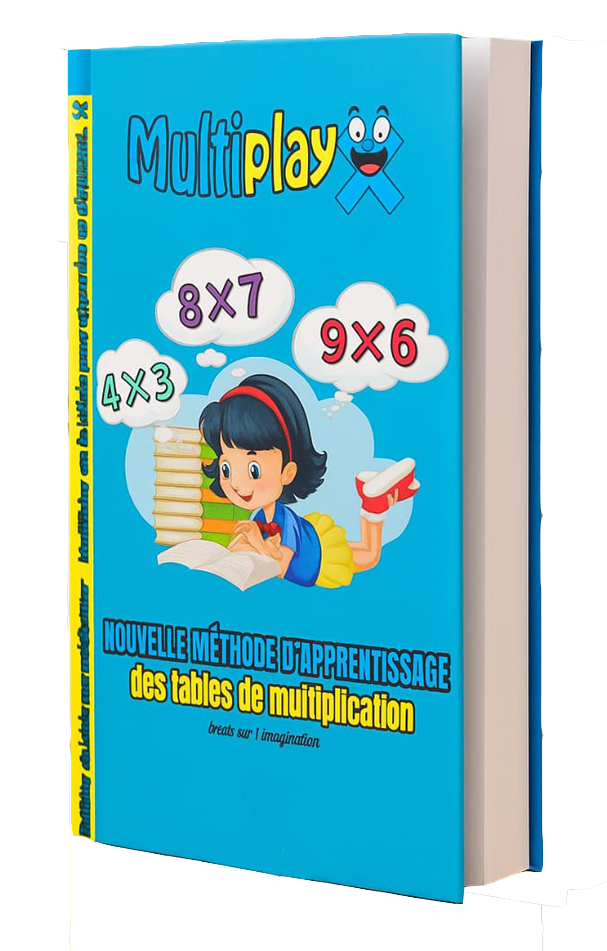

Méthode d’apprentissage des tables de multiplication par les vidéos et les histoires.
Découvrez une nouvelle façon d’apprendre les tables de multiplication — simple, amusante et inoubliable !
Cette méthode innovante transforme chaque table en une aventure captivante grâce à la puissance des histoires, des images et des vidéos.
36 vidéos ludiques et éducatives.
Chaque vidéo raconte une histoire vivante où les chiffres deviennent des personnages attachants : héros, objets ou animaux.
L’élève plonge dans un univers imaginaire qui stimule sa mémoire visuelle et émotionnelle, rendant chaque table facile à retenir.
72 cartes illustrées.
Les cartes permettent de renforcer l’apprentissage par le jeu.
- 36 cartes « questions » pour tester la mémoire
- 36 cartes « réponses » pour s’entraîner seul ou à deux
Elles transforment la révision en un moment de plaisir et de défi.
Certificat de réussite.
À la fin du programme, l’enfant reçoit un certificat de réussite personnalisé qui valorise ses efforts et renforce sa motivation.
Une belle récompense pour célébrer la maîtrise complète des tables de multiplication !
Objectif.
Aider l’enfant à mémoriser toutes les tables de 2 à 9 sans effort, en associant chaque opération à une image, une émotion et une histoire.
Cette approche multisensorielle favorise la compréhension, la motivation et la confiance en soi.